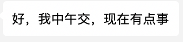

You say, you want to insert an image, its ok: #1.打开github官网https://github.com/，输入nvm搜索,选择creationix／nvm，打开
curl -o- https://raw.githubusercontent.com/creationix/nvm/v0.29.0/install.sh | bash
export NVM_DIR="$HOME/.nvm"
[ -s "$NVM_DIR/nvm.sh" ] && \. "$NVM_DIR/nvm.sh"